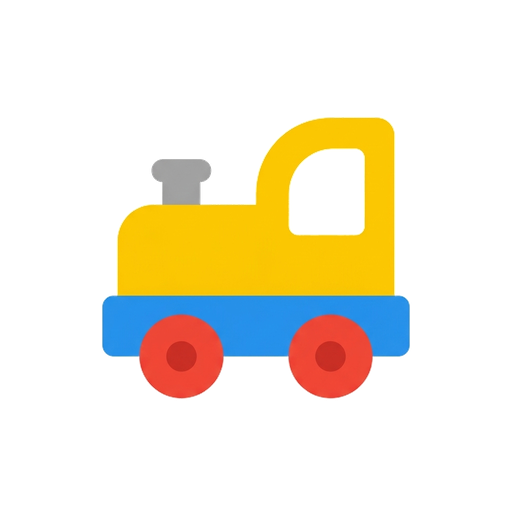
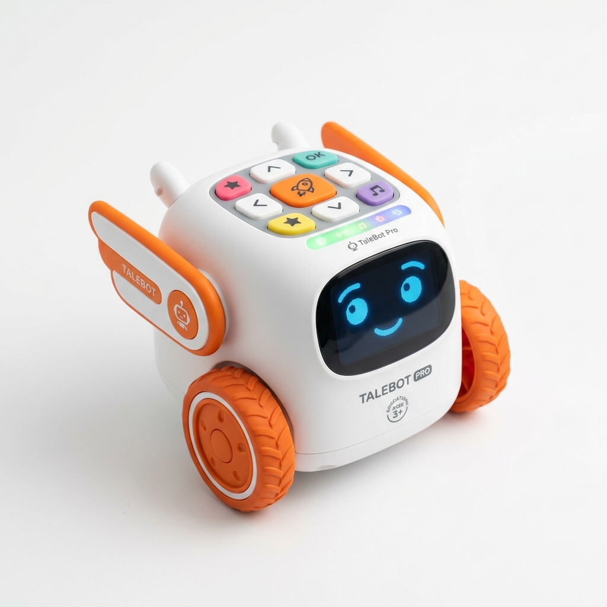
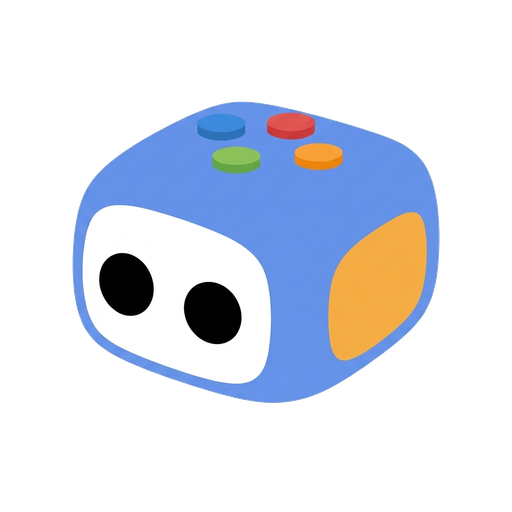
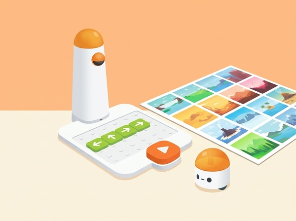
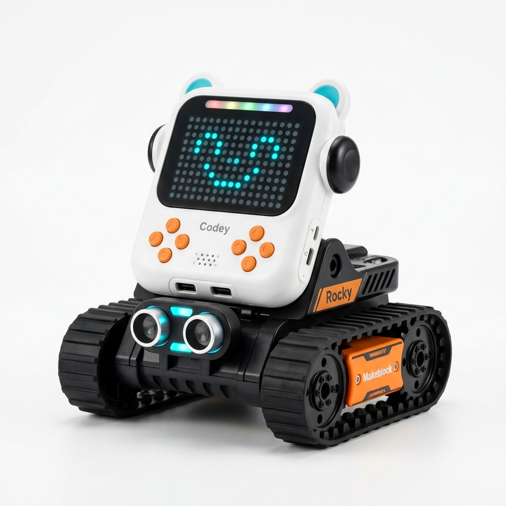
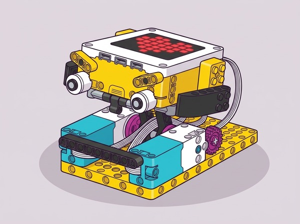
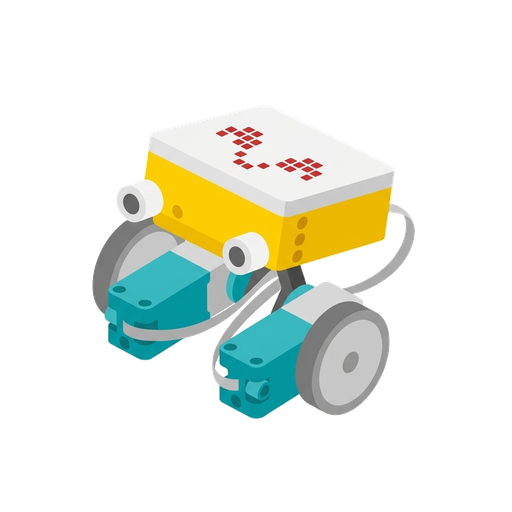
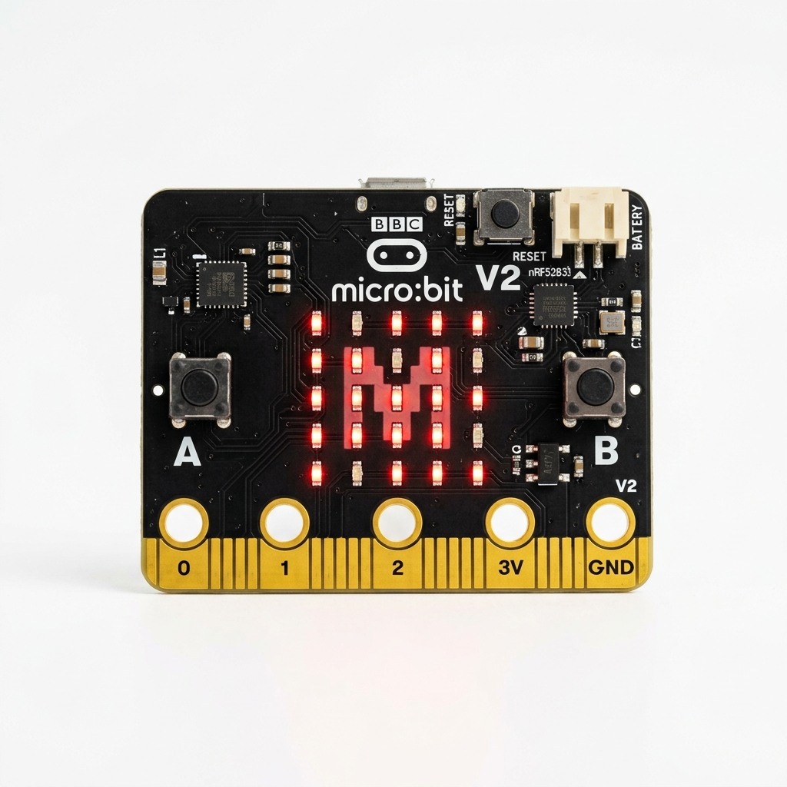

Robòtica Educativa
Selecciona un robot per accedir a la seva pàgina d'aprenentatge i tutorials específics.

Educació Infantil (2-5 anys)

Coding Express
El tren interactiu dels colors i el pensament computacional primerenc

Infantil i Cicle Inicial (3-7 anys)

TaleBot
El robot narrador que parla, llegeix mapes interactius i dibuixa

Infantil i Primària (4-9 anys)

CodingSet
Programació tangible sense pantalles amb Matatalab

Primària (6-12 anys)

CodeyRocky
El robot amb pantalla matriu LED de 16x8, orugues i IA

Cicle Superior i ESO (10-16 anys)

Spike
Mecatrònica, engranatges i sensors d'alta precisió de LEGO Education

Primària, ESO i Batxillerat (9-18 anys)

Microbit
La placa microcontroladora per a projectes oberts i ciutadans